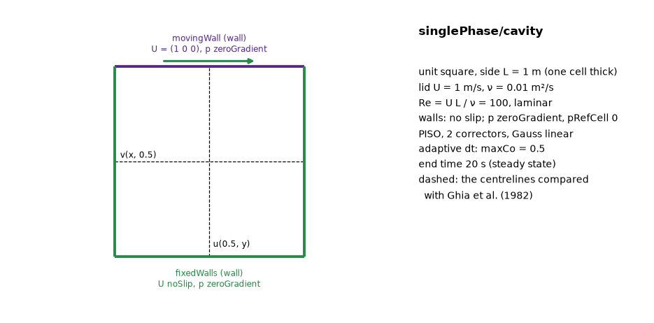
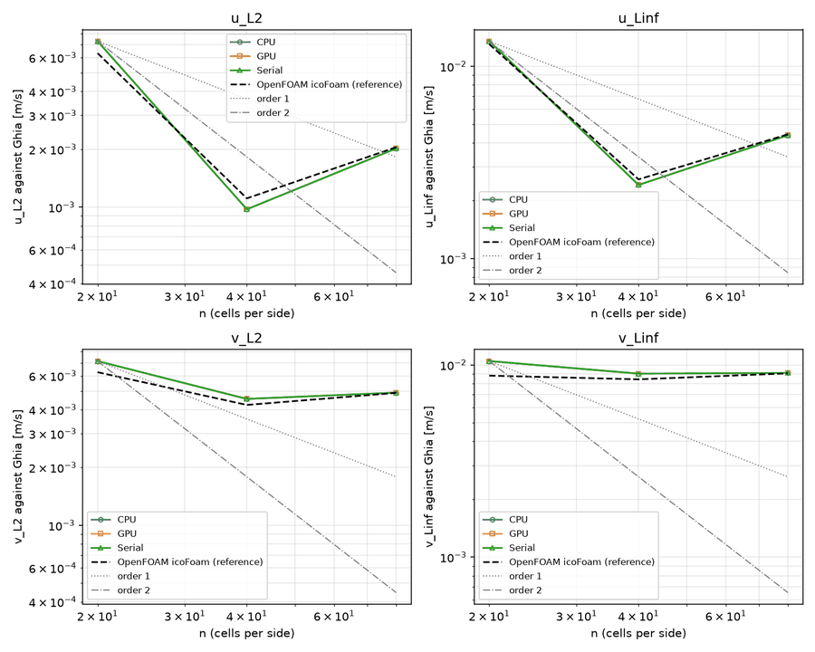
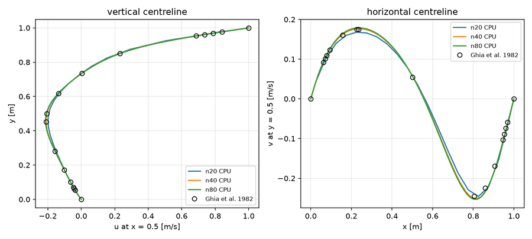
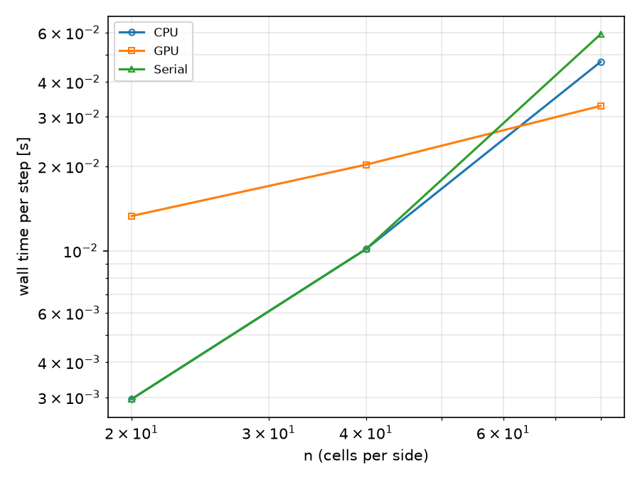
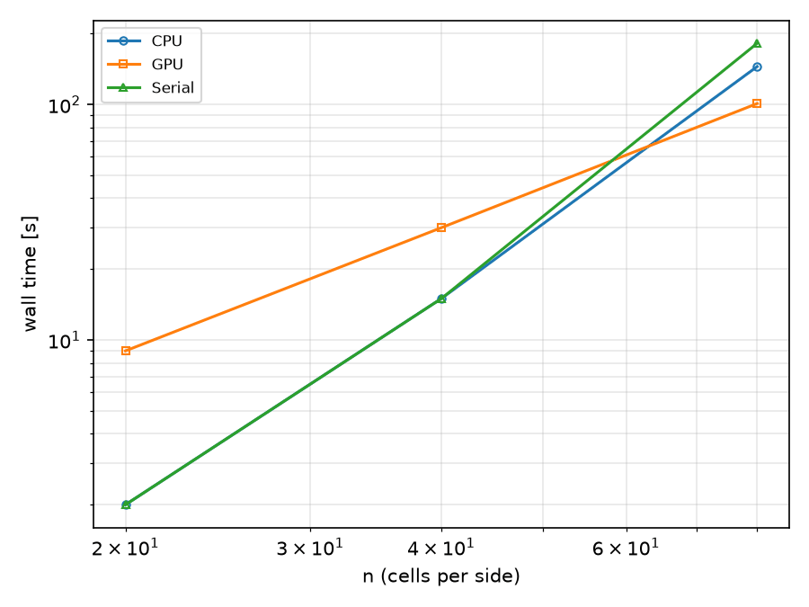

singlePhase/cavity¶
Why and what is tested¶
The lid-driven cavity is the basic check of an incompressible solver: a laminar, steady
recirculating flow with a classic benchmark solution. It tests NeoFOAM’s
incompressibleFluidNeoN (PISO) on NeoN against the centreline velocities of Ghia,
Ghia & Shin (1982) at Re = 100, and against OpenFOAM-v2406’s icoFoam on the same
case and meshes.
Case¶

The unit square (x-y, one cell in z) with the lid moving at U = 1 m/s; the dashed centrelines are where the velocity is compared with Ghia et al.¶
ν = 0.01 m²/s (Re = 100), Gauss linear, adaptive time step (maxCo 0.5) to t = 20 s,
the steady state. The errors are the RMS (L2) and maximum (L∞) of u − u_Ghia and
v − v_Ghia at Ghia’s 15 interior points on each centreline.
Parameter changes¶
Parameter |
Meaning |
Values |
Smoke run |
|---|---|---|---|
Mesh |
cells per side n (n × n; |
20, 40, 80 |
20 |
Executor |
NeoN backend ( |
Serial, CPU (OpenMP), GPU (CUDA) |
Serial |
9 cases (3 × 3); the smoke run (--smoke) has 1. The raw payloads are in benchmarks/singlePhase/cavity/benchmark.yaml.
Results¶

error_vs_n¶

profiles¶

time_per_step¶

wall_time¶
Mesh |
u error L2 [m/s] |
u error L∞ [m/s] |
v error L2 [m/s] |
v error L∞ [m/s] |
|ΔU| last 2 s [m/s] |
steps |
wall [s] Serial / CPU / GPU |
|---|---|---|---|---|---|---|---|
n20 |
0.007298 |
0.01352 |
0.007151 |
0.01046 |
1.131e-05 |
677 |
2 / 2 / 9 |
n40 |
0.0009745 |
0.002416 |
0.004545 |
0.009002 |
1.153e-05 |
1480 |
15 / 15 / 30 |
n80 |
0.002019 |
0.004381 |
0.004899 |
0.009078 |
1.135e-05 |
3076 |
1.8e+02 / 1.4e+02 / 1e+02 |
Rows: the Serial executor. CPU and GPU agree with it to 1e-05 (relative, in these columns; round-off values below 1e-10 left out).
All 9 cases and columns: results.csv, changes against the previous snapshot: changes.json.
profiles: the centreline velocities lie on Ghia’s points; n20 is visibly off only near the extrema of v.error_vs_n: the errors are at most 1.4e-2 on n20 and 1.0e-3 to 9.1e-3 on n40 and n80, for velocities of order 1. u converges at order 2.9 from n20 to n40 and rises again on n80; v levels off at 4.5e-3 to 4.9e-3 (L2). icoFoam (dashed) does the same: it is 1.5 % apart on n80 and up to 19 % on n20 and n40, where the time steps differ (icoFoam: fixed 0.001 s). Beyond n40 the comparison is limited by Ghia’s own 129 × 129 solution.time_per_step,wall_time: the GPU is slower than Serial up to n40 and 1.8× faster on n80; the CPU executor is 1.26× faster on n80.
Against the previous snapshot: 0 flagged (a metric off by more than a factor 2, a case missing or NaN), 0 new cases.